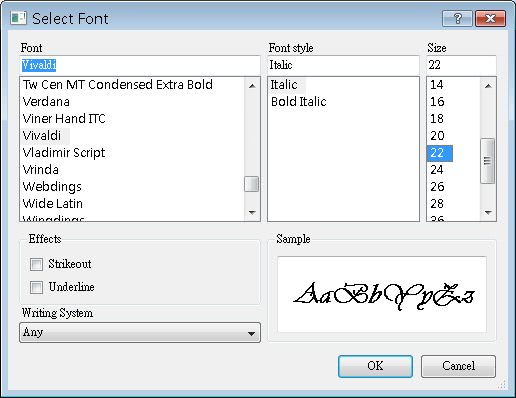

QColorDialog類別可以顯示一個顏色選取的對話方塊，使用者選取顏色之後，會傳回一個QColor物件，可以藉由這個QColor物件來取得所選取顏色的RGB值。
下面這個程式片段是QColorDialog的簡單的示範，在選取顏色之後，使用QMessageBox來顯示選取顏色的RGB值：
QColorDialog::setCustomColor(0, QRgb(0x0000FF));
QColor color = QColorDialog::getColor(QColor(0, 255, 0));
QString text;
if(color.isValid()) {
text.sprintf("R: %d G: %d B: %d",
color.red(), color.green(), color.blue());
QMessageBox::information(0, "Selected color",
text, QMessageBox::Yes | QMessageBox::No, QMessageBox::Yes);
}
text.sprintf("Available custom colors: %d", QColorDialog::customCount());
QMessageBox::information(0, "Get Selected Color",
text, QMessageBox::Yes | QMessageBox::No, QMessageBox::Yes);
QColor color = QColorDialog::getColor(QColor(0, 255, 0));
QString text;
if(color.isValid()) {
text.sprintf("R: %d G: %d B: %d",
color.red(), color.green(), color.blue());
QMessageBox::information(0, "Selected color",
text, QMessageBox::Yes | QMessageBox::No, QMessageBox::Yes);
}
text.sprintf("Available custom colors: %d", QColorDialog::customCount());
QMessageBox::information(0, "Get Selected Color",
text, QMessageBox::Yes | QMessageBox::No, QMessageBox::Yes);
setCustomColor()方法設定顏色選取方塊中，自訂色彩中出現時預設的選取顏色；getColor()這個方法除了取回設定的顏色之外，也會 將顏色選取方塊的值預設為指定的值；customCount()方法可以取回自訂色彩的最大個數，預設是16個待定義色彩。
在上例中也可以看到，QString可以使用類似C語言的printf()函式用法，也就是使用sprintf()來設定文字格式。下圖為顏色選取方塊執行的畫面：

下圖為顯示的訊息方塊，可以看到QString的文字已使用sprintf()進行格式化：
使用QFontDialog會出現一個字型選擇的對話方塊，它可以讓使用者選擇所要的字型樣式，然後傳回QFont物件，當中包括了所選擇的樣式資訊，可以直接使用這個物件來設定文字的字型。
下面這個程式可以讓使用者使用字型選擇的對話方塊，設定視窗中的QLabel物件之字型：
#include <QApplication>
#include <QWidget>
#include <QLabel>
#include <QFontDialog>
int main(int argc, char *argv[]) {
QApplication app(argc, argv);
bool isOk;
QLabel *label = new QLabel("<center>HelloWorld!</center>");
label->setWindowTitle("FontDialog");
label->resize(250, 100);
label->setFont(QFont( "Times", 18, QFont::Bold ));
label->show();
QFont font =
QFontDialog::getFont(&isOk, QFont("Times", 18, QFont::Bold), label);
if(isOk) {
label->setFont(font);
}
return app.exec();
}程式相當的簡單，QLabel物件的setFont()方法使用QFont物件來設定顯示的字型，以下是QFontDialog的執行畫面：

下圖為設定所選定字型的QLabel畫面：